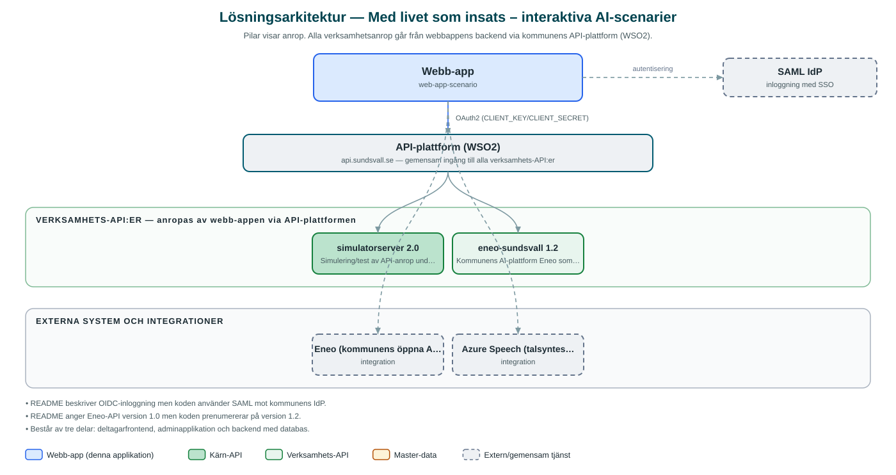

Med livet som insats – interaktiva AI-scenarier
AI-stött diskussionsverktyg där ungdomsgrupper under ledning av en utbildad vuxen utforskar livsval och deras konsekvenser genom interaktiva scenarier.
Om applikationen
Verktyget Med livet som insats används för att engagera unga i samtal om livsval och konsekvenser. En utbildad vuxen samtalsledare presenterar ett fiktivt scenario för gruppen, deltagarna gör val tillsammans, och AI anpassar berättelsen i realtid utifrån gruppens beslut.
Syftet är att unga i en trygg miljö ska kunna prova olika vägval och uppleva konsekvenser utan verkliga följder, träna beslutsfattande och stärka självförtroendet. Efter scenariot leder samtalsledaren en reflektion kring utfallet.
Lösningen är modulär så att nya scenarier kan läggas till över tid, och en separat administrationsdel finns för att hantera scenarier, kategorier och introduktionstexter. På grund av ämnenas känsliga natur kräver verktyget utbildade samtalsledare och är inte avsett att användas av unga på egen hand. Hela lösningen är öppen källkod och kan återanvändas av andra kommuner.
Det här stödjer applikationen
- AI-drivna scenarier – Berättelser som anpassas dynamiskt i realtid utifrån gruppens val, via kommunens AI-plattform Eneo.
- Ledarledd gruppdiskussion – Utformad för sessioner där en utbildad vuxen leder gruppen genom scenario, val och reflektion.
- Uppläsning med talsyntes – Text kan läsas upp med hjälp av Azures taltjänster.
- Administration av scenarier – Separat adminapplikation för att hantera scenarier, kategorier och introduktionstexter.
- Modulär och delbar – Nya scenarier kan läggas till över tid och lösningen kan införas av andra kommuner.
Teknisk dokumentation
Nedan beskrivs hur applikationen är uppbyggd, vilka API:er den använder och vad som krävs för att driftsätta den. Informationen är härledd ur källkoden och dess konfiguration på GitHub.
Arkitektur

Applikationen består av en webbaserad frontend (Next.js 15, React 19, sk-web-gui (separat frontend- och adminapplikation)) och en backend (Node.js med Express och Prisma mot MySQL (TypeScript)) som utvecklas i samma kodbas. Verksamhetsanrop går via kommunens gemensamma API-plattform (WSO2) – frontend pratar aldrig direkt med underliggande system. Inloggning: SAML (SSO) mot kommunens centrala inloggning. Övriga integrationer som förekommer i koden: Eneo (kommunens öppna AI-plattform), Azure Speech (talsyntes/taltjänster), WSO2 API-gateway, SAML IdP.
Teknikstack
- Frontend: Next.js 15, React 19, sk-web-gui (separat frontend- och adminapplikation)
- Backend: Node.js med Express och Prisma mot MySQL (TypeScript)
- Test: Cypress med kodtäckning
API-beroenden
Applikationen konsumerar följande API:er via kommunens API-plattform. Versionerna är hämtade ur källkodens API-konfiguration.
| API | Version | Användning |
|---|---|---|
| simulatorserver | 2.0 | Simulering/test av API-anrop under utveckling. |
| eneo-sundsvall | 1.2 | Kommunens AI-plattform Eneo som driver de dynamiska scenarierna. |
Konfiguration och driftsättning
- .env-filer för frontend, admin och backend enligt exempel
- CLIENT_KEY och CLIENT_SECRET från WSO2-portalen
- ENEO_API_KEY för AI-plattformen
- AZURE_REGION och AZURE_SUBSCRIPTION_KEY för taltjänster
- SAML-certifikat och nycklar
Noterbart ur källkoden
- README beskriver OIDC-inloggning men koden använder SAML mot kommunens IdP.
- README anger Eneo-API version 1.0 men koden prenumererar på version 1.2.
- Består av tre delar: deltagarfrontend, adminapplikation och backend med databas.
Källkod
Källkoden är öppen och finns hos Sundsvalls kommun på GitHub. I källkodsförrådet finns även instruktioner för att klona, konfigurera och starta applikationen i egen miljö.